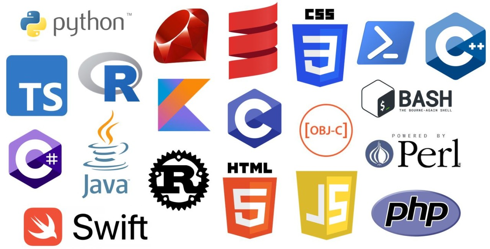

PROGRAMIRANJE
| Općenito | Microsoft OS |
| Programiranje ili kodiranje računara je sastavljanje sekvenci instrukcija, nazvanih programi, koje računari mogu slijediti kako bi obavljali zadatke. To uključuje dizajniranje i implementiranje algoritama, korak-po-korak specifikacije postupaka, pisanjem koda u jednom ili više programskih jezika. Programeri obično koriste programski jezici visokog nivoa koji su razumljiviji ljudima od strojnog koda, koji se izvršava izravno od strane centralne procesorske jedinice. Dobro poznavanje programiranja obično zahtijeva stručnost u nekoliko različitih područja, uključujući poznavanje domene aplikacije, detalja programskih jezika i generičkih biblioteka koda, specijaliziranih algoritama i formalne logike. |  |
| Pomoćni zadaci koji prate i odnose se na programiranje uključuju analizu zahtjeva, testiranje, otklanjanje grešaka (istraživanje i popravljanje problema), implementaciju sistemskih izgradnji, i upravljanje izvedenim artefaktima, poput strojnog koda programa. Iako se ovi ponekad smatraju programiranjem, često se termin softverski razvoj koristi za ovaj opširniji proces - s terminima programiranje, implementacija i kodiranje rezerviranim za pisanje i uređivanje samog koda. Ponekad se softverski razvoj naziva i softverskim inženjeringom, posebno kada koristi formalne metode ili slijedi proces inženjerskog dizajna. |  |
| Programski Jezici | Logotipi |
Programi ili instrukcije za računar pišu se u programskom jeziku koristeći
određenu sintaksu i pravila koja važe za svaki programski jezik (ili tip),
koji se zatim prevodi u strojni jezik koji je specifičan za određeno računalo i
ovisi o njegovoj arhitekturi. Prevođenje sa višeg programskog jezika na strojni
jezik obavlja se putem programa prevodioca (kompajlera) ili se naredbe na višem jeziku
direktno prevode putem takozvanog p_koda u strojni jezik.
Primjeri programskih jezika: Assembler BASIC Pascal C/C++/C# Java Logo Fortran |
 |